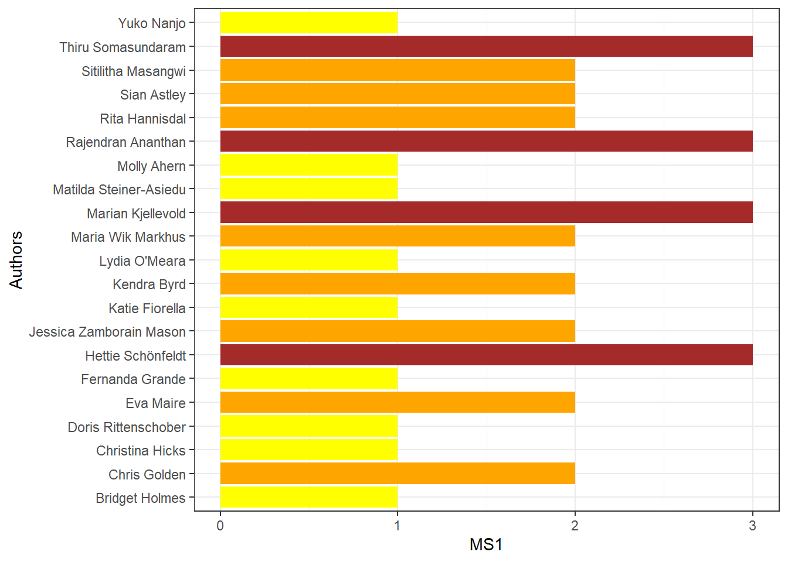
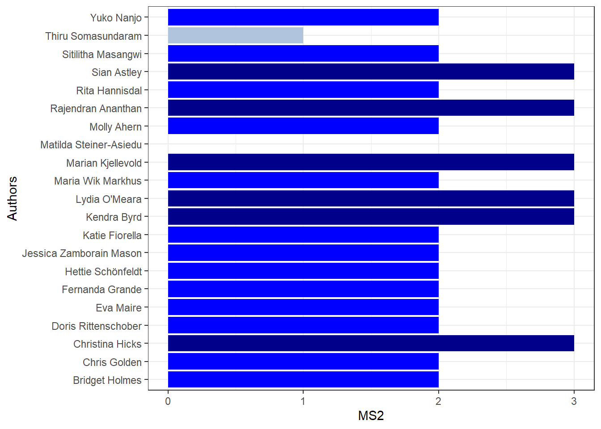
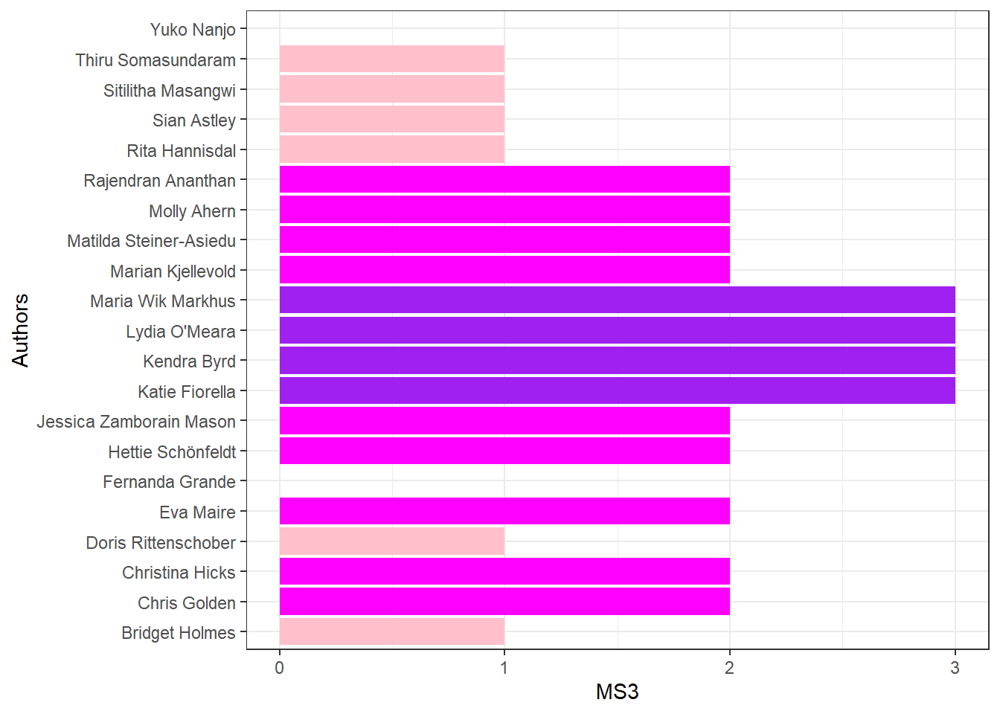

Aquatic Foods Community of Practice Writing Workshop
14-17 January 2025, Residenza Lavernale, Rome, Italy
Organising Committee

Professor Christina Hicks
Professor
Lancaster University
United Kingdom

Dr Kendra Byrd
Senior Research Fellow
University of Greenwich
United Kingdom

Dr Thiru Somasundaram
Research Fellow
Deakin University
Australia

Ms Lydia O’Meara
Ph.D. Candidate
Greenwich University
United Kingdom
Expert attendees

Professor Marian Kjellevold
Research Professor
Institute of Marine Research
Bergen, Norway

Professor Hettie Schönfeldt
DSI/NRF/NDP SARChI Chair in Nutrition and Food Security
University of Pretoria
South Africa

Professor Maria Wik Markhus
Research Professor
Institute of Marine Research
Bergen, Norway

Dr Sian Astley
Secretary General of EuroFIR
Brussels, Belgium
.jpg)
Dr Rita Hannisdal
Researcher
Institute of Marine Research (IMR)
Bergen, Norway

Ms Doris Rittenschober
Consultant
Food and Agricultural Organization of the United Nations (FAO)
Rome, Italy

Dr Kathryn Fiorella
Associate Professor
Cornell University
Ithaca, New York, United States

Ms Molly Ahern
Fisheries Officer
Food and Agricultural Organization of the United Nations (FAO)
Rome, Italy

Dr Jessica Mason
Postdoctoral Research Fellow
Harvard T.H. Chan School of Public Health
Boston, United States

Dr Eva Maire
Researcher
French National Research Institute for Sustainable Development (IRD)
Montpellier, France

Ms Yuko Nanjo
Nutrition and food system officer
Food and Agricultural Organization of the United Nations (FAO)
Rome, Italy

Dr Rajendran Ananthan
Scientist-E
National Institute of Nutrition
Hyderabad, Telangana, India
Ms Sitilitha Masangwi
Food Composition Data Compiler
Lilongwe University of Agriculture and Natural Resources
Lilongwe, Malawi
Remote manuscript contributors

Professor Matilda Steiner-Asiedu
Nutrition/consultant nutritionist
University of Ghana
Ghana

Dr Christopher Golden
Associate Professor
Harvard T.H. Chan School of Public Health
Boston, United States of America

Dr Bridget Holmes
Nutrition and food system officer
Nutrition Assessment Team Leader
Food and Agricultural Organization of the United Nations (FAO)
Rome, Italy

Dr Fernanda Grande
Nutrition and food system officer
Food and Agricultural Organization of the United Nations (FAO)
Rome, Italy
Co-Author profiles
Dr Bridget Holmes
Bridget Holmes is a Nutrition and Food systems Officer within the Food and Nutrition Division of FAO. Bridget has a PhD in Nutrition from King’s College London (UK) and over 25 years of experience in global dietary assessment. She leads the team in FAO working on dietary data, food composition and dietary indicators. She is responsible for the dietary data platform FAO/WHO Global Individual food consumption data Tool (GIFT), which provides open access to dietary data from surveys around the world and the new Food and Diet Domain on FAOSTAT which presents harmonized food and nutrient statistics from different types of dietary data. She is the global INFOODS co-ordinator, a network of experts aiming to improve the quality, availability and use of food composition data.
Professor Christina Hicks
Christina is an Environmental Social Scientist interested in the relationships individuals and societies form with nature; how these relationships shape people’s social, environmental, and health outcomes; and how they create sustainable livelihood choices. Christina is a professor within the Political Ecologygroup at Lancaster University’s Environment Centre. She gained her PhD in 2013 from the ARC Centre of Excellence for Coral Reef Studies, James Cook University; after which she held an Early Career Social Science Fellowship at the Center for Ocean Solutions, Stanford University. Christina main source of research funding conmes from an ERC Starting Grant: FAIRFISH, and she was awarded the 2019 Philip Leverhulme Prize for Geography. Christina’s work is global with particular field sites on the east and west coasts of Africa and in the Pacific.
Dr Christopher Golden
Dr. Christopher Golden is an Associate Professor of Planetary Health and Nutrition at the Harvard T.H. Chan School of Public Health. As an ecologist and epidemiologist, his research investigates the human health impacts of global environmental change, with a focus on food systems. He received his BA from Harvard College and two graduate degrees from UC Berkeley: an MPH in Epidemiology with a focus in Nutrition, and a PhD in Environmental Science, Policy and Management. Golden has been conducting research in Madagascar for the past 25 years, and founded the non-profit Madagascar Health and Environmental Research (MAHERY). He is the Director of the Program in Nutrition and Planetary Health at HSPH, and sits on the faculty board for the Center for Climate, Health and the Global Environment and the Center for Research on Computation and Society. His research has been published in Nature, Science, and the Proceedings of the National Academy of Sciences. His current research focuses on: 1) the role of climate-smart fisheries management to improve human nutrition; and 2) creating systems of climate-smart public health through climate and environmental monitoring and disease surveillance.
Ms Doris Rittenschober
Doris Rittenschober is a nutrition consultant, specialized in food composition data. She has been working in the Food and Nutrition Division of FAO for several years since 2011. She has extensive experience in the development of country and food group specific databases and has contributed to several FAO/INFOODS guidelines and training materials related to data compilation. Her work currently focuses on the update of the FAO/INFOODS Global food composition database for fish and shellfish. She holds a MSc. in Nutritional Sciences from the University of Vienna.
Dr Eva Maire
Eva Maire is a quantitative ecologist working to tackles issues in coral reef systems using both ecological and social-ecological approaches in the Indian Ocean and globally. More broadly, her research is highly interdisciplinary, spanning global issues of small-scale fisheries management, environmental change, human health, and biodiversity conservation. Her current research focuses on the contribution small-scale fisheries can make to human health with a focus on understanding how climate change impacts food and nutrition security in the tropics. Eva is a permanent research at IRD - the French Research Institute for Sustainable Development and she is currently based in Montpellier, France.
Professor Hettie Schönfeldt
Professor Schönfeldt’s research focuses on linking nutrient quantity and quality of foods to sustainable food systems for attaining nutrition and food security for all. She is an advocate for nutrition research, promoting excellence through the creation, translation and dissemination of science-based information into policies, programmes and training programmes both nationally, and internationally. She publishes evidence on why country-specific food composition data is essential to make it possible to interpret the dietary outcomes of countries. She serves as scientific advisor to AFROFOODS, a network on the African continent, forming part of IUNS/UNU/FAO INFOODS Task Force. She a co-director of the African Research Universities Alliance Centre of Excellence in Food Security and holds a Department of Science and Technology /National Research Foundation Research Chairs Initiative in Nutrition and Food Security.
Dr Jessica Mason
Jessica Zamborain Mason is an interdisciplinary quantitative marine scientist who aims to contribute towards achieving ecologic, social and economic sustainability in the world’s fisheries. Jessica’s research combines statistical and mechanistic models with empirical observational data to increase our understanding of human-environment interactions, the performance of natural resources, and inform resource management and policy. Her interests span two major overarching themes. First, as a way to identify the best context-specific pathways to manage fisheries, she is interested in developing sustainable reference points and assessing fisheries from multiple socio-ecological dimensions. Secondly, Jessica is interested in examining how natural resources, sustainable reference points, and the effective management of resources vary with ongoing environmental and socio-economic change.
Jessica completed her PhD at James Cook University and the ARC Centre of Excellence for Coral Reef studies (Australia) in 2021. During her PhD, she took a long-term fisheries production and ecosystem function lens, estimating sustainable reference points and assessing the status of multispecies coral reef fisheries at global and local scales. Currently, Jessica is a postdoctoral research associate in the Departments of Nutrition and Environmental Health at the Harvard T.H. Chan School of Public Health. Jessica’s current research takes a nutritional lens to fisheries, integrating nutritional outcomes into fisheries reference points, increasing our understanding on the nutritional contributions fo aquatic foods, and examining the consequences of climate change, human use and management on natural resources, human nutrition and public health. Overall, she aims to improve our understanding on nutrition-sensitive approaches to fisheries management and policy.
Dr Kathryn Fiorella
I am an environmental scientist and epidemiologist, and my research aims to understand the interactions among environmental change and livelihood, food, and nutrition security. My work is focused on global fisheries and the households that are reliant on the environment to access food and income. I use interdisciplinary methods and my work aims to foster a deeper understanding of how ecological and social systems interact, the ways communities and households adapt to and mitigate environmental change, and the links between human well being and ecological sustainability.
My work has been funded by NSF, USAID, National Geographic and more, and I have published more than 55 peer-reviewed journal articles. I am a co-editor of the book, Foundations of Socio-Environmental Research: Legacy Readings with Commentaries, which is an anthology of 53 foundational readings tracing the history of socio-environmental research from the late 1700s onward.
I am an Associate Professor in the Department of Public and Ecosystem Health at Cornell University, and I lead the Food Systems and Health Concentration area of the Master of Public Health Program. I am the faculty director of the Migrations Program in the Einaudi Center; a Faculty Fellow of the K. Lisa Yang Center for Wildlife Health, Cornell Atkinson Center and the Center for Health Equity; and a core faculty member of the Southeast Asia Program. I hold a PhD in Environmental Science, Policy & Management and a Master of Public Health from the University of California, Berkeley, and an AB in Ecology and Evolutionary Biology from Princeton University.
Dr Kendra Byrd
Dr Kendra Byrd is a Senior Research Fellow of Food Systems and Nutrition at the Food and Markets Department of the UK-based Natural Resources Institute. From 2018-2021 she was a nutrition scientist at WorldFish/CGIAR. Key research areas include aquatic food systems, healthy sustainable diets, micronutrient deficiencies, food security, and the intersection of climate change and health. She has over 12 years of experience doing nutrition-related research, and has conducted on-the-ground fieldwork in a wide range of countries, including Uganda, Kenya, Zambia, Nigeria, Bangladesh, and Timor-Leste. Her analyses and publications span from local, to transnational, to global.
Her work has appeared in journals such as Nature Medicine, The Journal of Nutrition, The American Journal of Clinical Nutrition, and Global Food Security, among others. She is also the co-author of the FAO-led report, “Illuminating Hidden Harvests: The Contributions of Small-Scale Fisheries to Sustainable Development” (FAO, Duke University, WorldFish, 2022). Her papers have been featured in several news outlets, including National Public Radio, and in podcasts such as the American Journal of Clinical Nutrition in Press (AJCN in Press).
Dr Byrd received her Ph.D. in Nutritional Biology from the University of California, Davis in 2016, an M.Sc. in Nutrition Science from California State University, Chico in 2006, and a B.Sc. in Biology from Hawaii Pacific University in 2004. Dr Byrd also served in the United States Peace Corps, in Uganda, from 2007-2009.
Ms Lydia O’Meara
Originally from a sheep station in outback Australia, Lydia is a nutritionist, specialising in sustainable food systems for nutrient adequacy of vulnerable groups. She has 6 years of research experience in sub-Saharan Africa and Asia-Pacific, focusing on small scale fisheries in the African Great Lakes Region, Mekong River Delta, and Pacific Islands. She is currently a PhD scholar with the Natural Resources Institute, University of Greenwich UK and lead FAO consultant on the Timor-Leste National Fish Consumption Survey.
Given the global paucity of disaggregated aquatic food consumption data, limiting analysis of the aquatic food-nutrition-environmental nexus; Lydia has a strong interest in refining dietary data collection methods to improve data quality of fish consumption using innovative tools such as photographic visual aids to identify species and quantify amount eaten. As a part of her PhD, she is analysing the contribution of aquatic foods to the micronutrient adequacy of women living nearby fisheries in rural Uganda using weighed food records. She is also validating a novel method using mobile phones to remotely monitor dietary quality and fish consumption of hard-to-reach fisheries-dependent households during the wet season when roads become impassable.
In her work with WorldFish and FAO, Lydia contributed to the FAO report “Illuminating Hidden Harvests: the contribution of small-scale fisheries to global food and nutrition security”, helped integrate small fish into the National Feeding Programme in Odisha, India, and was lead author on the FAO report “Pacific food systems: the role of fish and aquatic foods for nutrition and health” for the UN Food Systems Summit.
Professor Marian Kjellevold
Kjellevold is a nutritionist at the Institute of Marine Research (IMR) in Bergen, Norway. Her expertise centers on food security and nutrition, with a particular emphasis on the role of aquatic foods as a sustainable, food-based strategy to address micronutrient deficiencies.
Aquatic food is not well integrated into efforts to achieve the United Nations Sustainable Development Goals (SDGs) of “zero hunger” (SDG 2) and “good health and well-being” (SDG 3). Dr. Kjellevold’s research, emphasizes how SDG 14 (Life Below Water) can enhance nutrition security in low- and middle-income countries in Africa and Asia, as well as in high-income countries like Norway.
Since 2018, Dr. Kjellevold has led the “Nutrition and Food Safety” science theme within the EAF Nansen Programme, a longstanding partnership between the FAO and Norway, implemented in close collaboration with the IMR. Through the EAF Nansen Programme and various research initiatives, Dr. Kjellevold has focused on generating high-quality analytical data on aquatic foods across Africa and Asia. Her research spans both raw and processed species from marine and freshwater resources. Additionally, she has played a role in developing the Aquatic Food Composition Database at Harvard and has contributed to the IMR Seafood Database.
Dr. Kjellevold has authored or co-authored approximately 110 peer-reviewed journal articles across several fields: nutritional epidemiology, food composition and analysis, dietary assessment, food safety, and food and nutrition security. She has also delivered numerous scientific presentations, spoken at various conferences, and written popular articles on these topics.
Professor Maria Wik Markhus
Research Professor Maria Wik Markhus is a nutritionist at the Institute of Marine Research (IMR) in Bergen, Norway, specializing in food security and nutrition. She holds a PhD in nutrition science and has dedicated her career to understanding the connections between diet, health, and the environment, with a particular focus on the role of aquatic foods in addressing micronutrient deficiencies.
Dr. Markhus’s research highlights the nutritional benefits of aquatic foods, especially their richness in omega-3 fatty acids and essential micronutrients. Her work emphasizes the potential of sustainable aquatic food systems to combat malnutrition and improve global health. She has published over 40 peer-reviewed articles on topics ranging from the nutritional value of aquatic foods to micronutrient status in populations and the development of sustainable food practices.
Dr. Markhus works with policymakers, international organizations, and research institutions to promote evidence-based solutions for the importance of aquatic foods for food security and nutrition. She is a frequent contributor to both UN and scientific international conferences on nutrition, food systems, and sustainability. In addition to her research, Dr. Markhus leads the secretariat of the Global Action Network for Sustainable Food from the Oceans and Inland Waters for Food Security and Nutrition, a government lead initiative by Norway. Through her leadership, she organizes events to advance sustainable aquatic food practices and improve food security for all. Her work continues to shape global efforts to use aquatic foods as an important part of the solution for improving nutrition and health, particularly in vulnerable populations
Professor Matilda Steiner-Asiedu
Matilda is a professor at the University of Ghana. She holds a BSc from the University of Ghana, an MPhil and PhD in Nutrition from the University of Bergen, Norway, and an MPH from Brown University, USA. She is a past Dean of the School of Biological Sciences, University of Ghana. Since 1993, she has taught and supervised local and international students at the undergraduate and graduate levels at the University of Ghana. She is also an adjunct professor at New York University, USA, Accra Campus.
She has played and continues to play a pivotal role in preparing important documents for several national and international organizations. She has won many grants and sub-awards and was named the 2012 Laureate of the African Union Kwame Nkrumah Award for Women in Science in the section on Life and Earth Sciences. Her research focuses on nutrition and well-being through the life stages, with special emphasis on the role of fish in nutrition, NCD prevention, and the elderly. She has presented papers at international and local scientific conferences on pertinent public health and nutrition issues and has served on local and international scientific committees. She has co-authored over 100 scientific papers in peer-reviewed journals and contributed to several chapters in books. She is passionate about helping people to improve their lives.
Ms Molly Ahern
Molly Ahern joined the FAO Fisheries division based in Rome, Italy in 2019 as a Fisheries Officer / food security and nutrition specialist, where she works to support the promotion of aquatic foods for sustainable healthy diets and their inclusion in national food security and nutrition policies. She has coordinated global projects to support small-scale fisheries in 9 countries, particularly through upgrading fish value chains, and developing fish products for nutrition programs in the first 1000 days and school feeding and supports the development and implementation of nutrition education programs and dietary assessments focused on aquatic foods. Prior to joining FAO, Molly worked for Bioversity International (in Costa Rica, Zambia & Malawi), WorldFish (in Zambia & Malawi), as well as conducted short assignments with USAID (AWE) (home-based), CGAP (Turkey) and Cultivating New Frontiers in Agriculture (CNFA) (in Malawi).
Dr Rajendran Ananthan
Dr. R. Ananthan is working in the Food chemistry and nutrient analysis since December 2004. His main area of research work is food composition analysis. He has extensively worked for the development/ standardization of analytical methods to quantify various nutrients and bioactive substances using sophisticated instruments. He is one of the authors of Indian Food Composition Tables 2017 (www.ifct2017.com). His another area of works is to quantify bioactive phyto-nutrients and measure their free radical scavenge capacities in functional foods. He also works on food biodiversity and food systems of different indigenous populations to study the availability and accessibility and consumption pattern for the food and nutritional security of the population. He has guide-ship in the faculty of Biochemistry as well as Nutrition from Osmania University.
Dr Rita Hannisdal
Dr Rita Hannisdal is a researcher at the Seafood and Nutrition group at the Institute of Marine Research in Norway. She has a background in analytical chemistry and has extensive experience in developing analytical methods for analyses of contaminants and nutrients. Dr Hannisdal received her PhD in analytical chemistry from the University in Bergen, Norway, where she conducted research on folate. Dr Hannisdal is project leader for the Seafood database, an open access database from the Institute of Marine Research that presents analytical data on both nutrients and contaminants in seafood. She has a particular interest in the importance of obtaining high quality data, and for the data to follow the FAIR principle, making them Findable, Accessible, Interoperable, and Reusable. Dr Hannisdal is a member of the Norwegian Scientific Committee for Food and Environment, which carries out independent risk assessments. She also participated in the work on the 2023 FAO/WHO Background Document on the Risks and Benefits of Fish Consumption. For several years she has provided data on contaminants in seafood to The European Food Safety Authority (EFSA). Dr Hannisdal has been involved in organising several webinars related to the importance of aquatic foods in sustainable food systems.
Dr Sian Astley
Siân has worked extensively with individuals and organisations throughout Europe from a variety of disciplines including research, food and biotech industries and the media. She is author of more than 300 popular science articles for magazines and trade publications as well as 27 peer-reviewed papers. She became Communications Manager for NuGO, one of the first FP6 Networks of Excellence, and was the European Communications Manager for the Institute of Food Research in Norwich (UK) until April 2012. Currently, she is the Secretary General of EuroFIR (European Food Information Resource), which is instrumental in promoting research, innovation, and FAIRifcation in food data in Europe. She has a particular interest in nutrigenomics, personalised nutrition, sustainable food systems, and co-creation of solutions with stakeholders. Siân is an independent science communicator and an editor for Food Chemistry and Editor-in-Chief for Food Chemistry: Molecular Sciences.
Dr Thiru Somasundaram
Dr Thiru Somasundaram is an experienced food and nutritional analyst with emphasis on nutrients and toxicants of marine origin. Dr Thiru has a strong analytical chemistry and data science background with emphasis to high-thorughput methods, machine learning models, and compositional data analysis. He is currently working as a research fellow at Nutrition and Seafood Laboratory of Deakin University, Australia. Dr Thiru also have served as a scientist/researcher in Sri Lanka, India and United Kingdom (Remote). In addition to his nutritional scientific research endeavor he also involves in scientific and statistical programming, designing web pages for scientific organisations (including this page) and graphic designing for scientific publications and communication. He earned his doctorate in 2024 in Life and Environment from Deakin University, Australia.
His scientific work has appeared in Food Research International, Food Control, Algal Research and Journal of Food Composition and Analysis. Dr Thiru also works as an independent consultant for research and development organisations in Australia.
Yuko Nanjo
Yuko Nanjo is a nutrition and food system officer. She joined the FAO Food and Nutrition Division in September 2022 to contribute to updating the aquatic food composition database named uFiSh. Before joining the team, she worked for the Ministry of Agriculture, Forestry and Fisheries of Japan for 8 years and FAO on a project strengthening capacities for nutrition sensitive food systems. In MAFF she worked for projects to update databases on fishing ports and analyze data of agricultural cooperatives in Japan and data of export of foods and agricultural, forestry and fisheries products. She holds a MSc. in Agricultural economics from the Hokkaido University.
Ms Sitilitha Masangwi
Food Composition Data Compiler, Lilongwe University of Agriculture and Natural Resources, Lilongwe, Malawi.
Author interests
MS1 - Methods in Aquatic Food Nutrient Composition Data
Best practices guidelines
MS2 - Guiding how to select aquatic food FCT databases e.g. for matching with which kinds of dietary databases/analysis

MS3 - Case for expanding aquatic foods beyond a single SDG, framing /strategy paper
